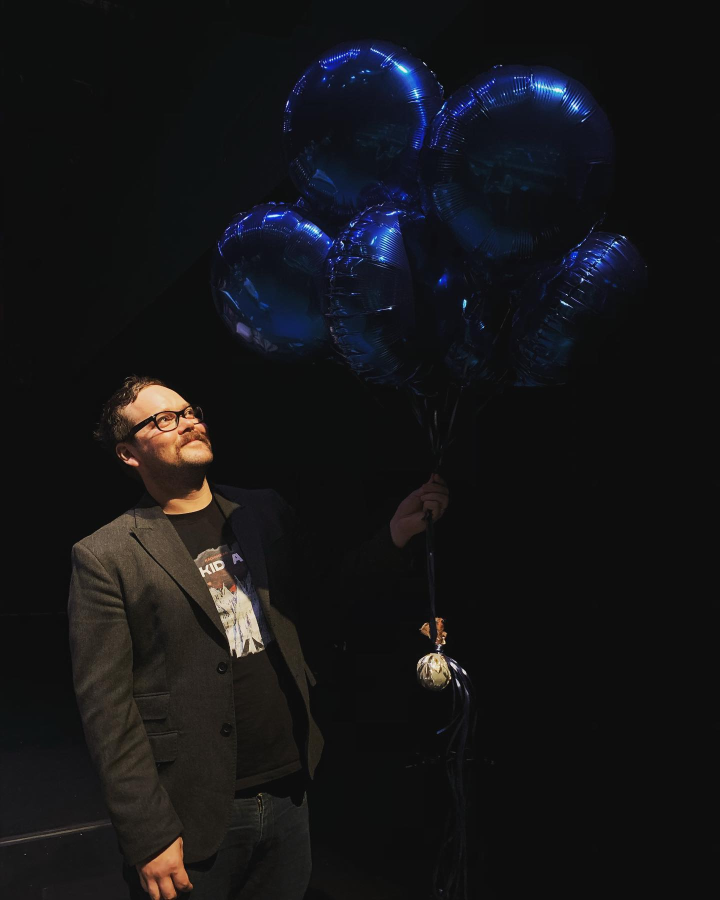

Hunter Long: Full Stack Developer
About
Composer and arts entrepreneur with a passion for software development.
My interest in music technology led me to explore creative coding and developing virtual AR experiences. After earning my masters degree from UC Irvine in music technology, I’m currently completing my doctorate in composition with a focus on technology at USC. I teach music and multimedia programming with MaxMSP as well as Pro Tools, Logic and Ableton. While at USC I’ve also done research in augmented reality while developing with Unity, Eighth Wall, and Reality Composer. I’m proficient in Python, JavaScript, HTML, and CSS, and am currently completing the full-stack MERN bootcamp through MIT.
Take a look at all the projects in my portfolio by visiting the projects page.
